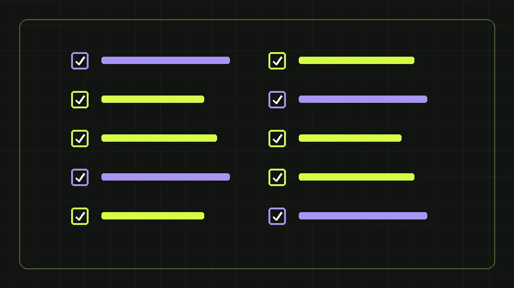

На что смотреть в договоре, кейсах, аналитике и процессе работы.
Сначала определите задачу
Прежде чем выбирать агентство, опишите бизнес-цель: лиды, рост конверсии, запуск продукта или выстраивание маркетингового отдела. Хороший подрядчик уточнит цель, исходные данные и бюджет, а не предложит одинаковый набор каналов всем.
Чек-лист: экспертиза и доказательства
- Есть ли релевантные кейсы? 2. Понятна ли методика подсчёта результата? 3. Кто будет работать с проектом? 4. Есть ли опыт с вашим циклом сделки? 5. Может ли команда назвать ограничения подхода?
Чек-лист: процесс и контроль
- Указан ли состав работ в договоре? 7. Кто владеет рекламными кабинетами и аналитикой? 8. Как согласуются KPI и отчётность? 9. Как обрабатываются персональные данные и доступы? 10. Как устроен выход из сотрудничества и передача материалов?
Красные флаги
Обещания гарантированного первого места в поиске или произвольного количества продаж без анализа данных должны настораживать. Как и нежелание показывать методику измерений, условия владения аккаунтами и ответственность за результат.
Короткая рекомендация
Сравните два-три предложения по одному набору критериев: стратегия, команда, затраты, метрики, процесс и прозрачность. Выбирайте организацию работы, которая подходит бизнесу, а не самую эффектную презентацию.
Пункт 1. Совпадает ли опыт агентства с вашим типом бизнеса
Красивый кейс интернет-магазина не всегда доказывает способность управлять маркетингом сложного промышленного B2B. Уточните, какие продукты команда продвигала, насколько похож цикл сделки, как она взаимодействовала с отделом продаж и откуда брала данные о качестве обращений. При этом отсутствие кейса строго из вашей узкой отрасли не обязательно означает слабую экспертизу: важнее способность понять ограничения и предложить разумную методику теста. Попросите исполнителя описать, какие вопросы он задаст техническим экспертам до запуска. Хороший сигнал — интерес к продукту, географии поставок, маржинальности, сезонности и этапам закупки. Плохой — готовое универсальное предложение без попытки разобраться в контексте. Проверяйте не только известные логотипы в портфолио, но и реальную роль команды в этих проектах.
Пункт 2. Можно ли проверить заявленные результаты
Результат в презентации должен иметь понятную основу: исходный период, действия подрядчика, стоимость работ и критерий подсчёта. Уточните, что означает фраза «увеличили лиды»: все заполненные формы или обращения, принятые отделом продаж? Указана ли динамика бюджета? Были ли у клиента другие маркетинговые подрядчики? Если раскрытие данных ограничено соглашением о конфиденциальности, агентство может показать обезличенную методику и документально подтверждённые элементы с согласия клиента. Не требуйте чужих персональных данных или коммерческих секретов. Важно не число громких процентов, а способность команды объяснить механизм результата и ограничения вывода. Настоящий кейс обычно содержит не только удачные решения, но и проблемы, которые пришлось исправлять.
Пункт 3. Кто именно будет работать над проектом
Выясните, есть ли постоянный руководитель проекта, какие специалисты подключаются по задачам и кто отвечает за техническую часть. Уточните число одновременно обслуживаемых клиентов, наличие резервного сотрудника и способ передачи знаний. Список профессий на сайте агентства ещё не гарантирует их доступность вашему проекту. Попросите показать пример задач на две недели с ответственными и ожидаемыми результатами. Если для сайта необходим разработчик, важно знать, входит ли эта работа в договор или оплачивается отдельно. Если продвигается несколько направлений, нужна единая стратегия, а не независимые отчёты рекламщика и SEO-специалиста. Ответственность должна проходить через конкретного человека, который умеет объяснить общую картину руководителю бизнеса.
Пункт 4. Понимает ли команда экономику продукта
Профессиональное агентство спрашивает не только рекламный бюджет, но и средний чек, маржинальность, допустимую стоимость привлечения, повторные продажи и цикл сделки. Эти значения могут быть неизвестны или приблизительны; важно честно обозначить ограничения и договориться, как собирать данные. Подрядчик, который обещает фиксированное количество продаж без понимания конверсии менеджеров и доступности продукта, берёт на себя то, чем не управляет. Запросите расчёт сценариев: что происходит, если стоимость клика вырастет, конверсия сайта снизится или часть лидов не будет дозвонившейся. Агентство не обязано предсказать рынок идеально, но должно показывать логику гипотез и границы ответственности. Это особенно важно для B2B с длинным циклом согласования.
Пункт 5. Есть ли прозрачный план первых месяцев
Вместо фразы «запустим продвижение» попросите дорожную карту: аудит, настройка аналитики, исследования, посадочные страницы, запуск тестов, контроль качества заявок, регулярные встречи. Для каждой задачи должны быть срок и измеримый результат. На старте допустим этап сбора данных, когда продаж ещё нет; это нужно объяснить заранее. Попросите указать зависимости: какие материалы, доступы и согласования предоставляет заказчик. Если агентство обещает быстрый результат в сложном B2B без изучения продукта, относитесь к срокам критично. Хорошая стратегия включает правила пересмотра: при каких показателях усиливается канал, когда гипотезу останавливают, как обновляют бюджет. Так вы покупаете управляемый процесс, а не обещание активности.
Пункт 6. Кому принадлежат аккаунты, домен и материалы
Рекламные кабинеты, аналитические счётчики, домен, сайт и база контактов — стратегические активы бизнеса. Убедитесь, что договор определяет владельца, уровни доступа и порядок передачи после завершения сотрудничества. Не стоит строить долгосрочную систему на личной почте подрядчика или оставлять единственный доступ к CRM у внешнего исполнителя. Уточните, кому принадлежат тексты, дизайн, исходный код, фотографии и лицензии на используемые материалы. Для облачных сервисов запишите, кто оплачивает подписки и кто может экспортировать данные. Хорошее агентство не должно мешать переходу к другому подрядчику или внутренней команде. Прозрачность владения активами — важный показатель зрелости процессов.
Пункт 7. Что именно будет в отчётности
Попросите пример отчёта за месяц с пояснениями. Помимо расходов, охвата и кликов там должны быть заявки, качество лидов, воронка продаж и план следующего периода — насколько позволяют данные. Если CRM ещё не настроена, агентство должно объяснить, как это ограничивает выводы. Уточните, кто отвечает за корректность отслеживания конверсий и как решаются разночтения между рекламным кабинетом и CRM. Регулярная встреча должна завершаться решениями: что продолжить, что изменить, какой тест запустить. Не путайте объём презентации с прозрачностью. Короткая таблица с достоверными данными и понятной гипотезой может быть полезнее десятков скриншотов из кабинетов.
Пункт 8. Как устроено согласование и управление изменениями
Даже сильный подрядчик может столкнуться с задержками, если каждое объявление согласуется неделями. Уточните регламент: какие материалы требуют обязательного утверждения, кто имеет право менять бюджет, как быстро рассматриваются замечания, что считается срочной ситуацией. Попросите показать систему задач или пример спринта. Для сложных отраслей важно разделить юридически значимые сообщения и обычные маркетинговые корректировки. Если компания предоставляет техническую информацию, назначьте внутреннего ответственного за её точность. Сроки должны учитывать зависимости от заказчика, а не быть только обязательствами исполнителя. Процесс изменений защищает обе стороны: подрядчик не запускает непроверенные обещания, а заказчик видит, почему задача переносится.
Пункт 9. Как защищаются персональные данные и доступы
Агентство может получать доступ к заявкам, записям разговоров, email-контактам и CRM. Попросите описать, какие именно данные нужны, кто их обрабатывает, в каких системах они хранятся и как прекращается доступ при завершении договора. Уточните наличие необходимых договорных положений и процедуры реагирования на жалобы и утечки. Особенно внимательно проверяйте услуги по «перехвату» контактов и холодным рассылкам: нельзя считать законным происхождение базы только потому, что её продаёт поставщик. Доступы должны выдаваться по принципу необходимого минимума, а не через обмен общими паролями в мессенджере. Ответы на эти вопросы показывают, умеет ли команда работать в интересах бизнеса в долгосрочной перспективе.
Пункт 10. Что происходит при завершении сотрудничества
Обговорите срок уведомления, оплату незавершённых работ, передачу исходников, экспорт данных, смену паролей и отключение подрядчика от систем. Укажите, кто завершает текущие рекламные кампании и кому принадлежат созданные материалы. Если заключён договор на SEO или контент, убедитесь, что все опубликованные страницы останутся у компании, а доступы к CMS не исчезнут. Честный выход из проекта не должен превращаться в конфликт из-за владения рекламным кабинетом. Попросите описать процедуру передачи ещё до подписания договора. Это также помогает оценить зрелость внутренней документации агентства.
Как сравнить агентства без субъективной оценки
Составьте единую таблицу для трёх кандидатов. По каждому из десяти пунктов поставьте оценку от 0 до 2: нет ответа, частичный ответ, подтверждённый ответ. Дополнительно укажите обязательные требования: опыт в выбранной модели продаж, безопасность данных, понятный договор и доступ к аналитике. Сумма баллов — только инструмент обсуждения, а не научный рейтинг поставщика. Если агентство набрало много баллов за презентацию, но не может объяснить, кому принадлежит база клиентов, это критический риск независимо от общей оценки. Попросите одинаковый бриф и одинаковый формат коммерческого предложения. Так будет видно, кто действительно понял задачу, а кто предлагает шаблонный пакет.
Какие вопросы задать на первой встрече
Попросите команду описать три вероятные причины, по которым у компании может не получаться маркетинг, и данные, необходимые для их проверки. Уточните, кто отвечает за сайт, аналитику и CRM, как согласуются KPI, как принимается решение об увеличении бюджета. Спросите, какую часть результата агентство не может гарантировать и почему. Посмотрите, задают ли специалисты встречные вопросы о продукте, продажах и ограничениях. Хорошая встреча должна закончиться понятным списком материалов и следующим шагом, а не только предложением «оплатить запуск». Если вам нужны две разные услуги, уточните, будет ли единый менеджер проекта и общая система отчёта.
Как организовать пилот на три месяца
Первый месяц отведите на диагностику, доступы, аналитику, план и ограниченные запуски. Во втором проверьте гипотезы и качество заявок с обратной связью отдела продаж. В третьем сравните результаты с исходной точкой и решите, какие работы масштабировать, а какие прекращать. Для длинного B2B-цикла это может быть слишком короткий период, чтобы оценить всю выручку; поэтому заранее согласуйте промежуточные KPI. Зафиксируйте полномочия и обязанности обеих сторон. Не обещайте себе, что хороший подрядчик устранит все проблемы бизнеса за квартал. Пилот должен показать дисциплину, качество коммуникации, доступность компетенций и первые проверяемые сигналы.
Частые ошибки при выборе агентства
Самая частая — ориентироваться исключительно на обещанную стоимость заявки без понимания качества. Вторая — путать яркое портфолио с релевантным опытом. Третья — не назначить собственника продукта внутри компании. Четвёртая — отдать подрядчику единственный доступ к рекламе, домену или CRM. Пятая — не согласовать, что считать заявкой и продажей. Шестая — ожидать от одной услуги решения всех проблем цепочки, включая работу менеджеров и наличие товара. Седьмая — начинать продвижение без утверждённого коммерческого предложения. Чек-лист помогает предупредить эти ошибки до появления затрат и взаимных претензий.
Вывод и следующий шаг
Сильный подрядчик способен не только запускать объявления, но и объяснять, почему выбран тот или иной путь, на каких данных строится решение и где заканчивается его зона ответственности. Выбирайте агентство по опыту, прозрачности процесса, доказуемости результатов и управляемости активов. Если требуется постоянная внешняя команда, изучите маркетинг на аутсорсе. Если нужно единое управление стратегией, рекламой, сайтом и аналитикой, посмотрите маркетинг под ключ. Сохраните десять вопросов из статьи и задавайте их всем кандидатам в одинаковой форме.
Этот материал находится на согласовании и не индексируется поисковиками, пока редактор не подтвердит факты и источники.
Сделаем план под вашу ситуацию
Обсудим задачи бизнеса и бюджет первых тестов.
Получить маркетинговый план ↗